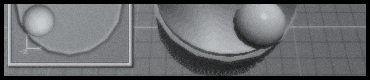

 |
||||||||||||||||||||||||||||||||||||||
|
ReBirth Knobs... |
||||||||||||||||||||||||||||||||||||||
|
Getting Perfect Rotation From knobs
I've been using Infini-D by Metacreations (now corel) to build a 3d model of the knob. I suppose any 3d rendering application will work fine. This seems to be the easiest way to get perfect rotation out of knob actions. Photoshop's rotation feature just doesn't quite cut it. Rotated images usually end up wobbly. I think the vectoring actions in the upcoming Photoshop 6 will probably work, but we shall see. With the 3d Modeling application, you create a model of the knob, then animate it to rotate around a center axis. After rending the animation, you can cut and paste each frame into a film strip and save the assembled animation frames as a jpg and pack it into your mod. Dancing Pixels
on the Knob Background How ReBirth Handles Knob Animation Strips Altering the vertical size of knobs is pretty easy, just increase the vertical size of your image. Increasing the width of the knob frames requires a bit of algebra. For example, I usually like to make the 909 knobs the same size as the 808 knobs. The 909 knobs are displayed in 12x12 pixel frames. Increase them to 13x13 pixels as follows:
so the final image size of 12565.jpg (the 909 knobs) would be 13 pixels high by 573 pixels wide. |
Short Cuts Since the movie is imported as a vertical film strip, it must be rotated 90¡ counter-dclockwise. To compensate for this rotation the animation start position is usually about 10 o'clock Mid position is 3 o'clock and finish position is usually 8 o'clock. When rotated. the start position will be 7 o'clock, mid position 12 o'clock and finish position is 5 o'clock. Reduce the image size to fit the dimensions listed below with the Bicubic dither setting. I only reduce the image width and let photoshop automatically calculate the height (proportions constrained). On the new layer, copy the background of knob (including fixed shading etc onto this masking layer. Then disable the bottom knob layer so that only the mask shows (the transparent grey and white blocks should be visible where the knob normally is). Select the area of 1 frame including divider (e.g. 12507.jpg select 30 h x 31w area) Then "Define Pattern" from the selection Create a new layer. Select ALL . Then Fill with the pattern. If your dimensions are set properly, the Fill should align perfectly with each frame of the knob allowing the changing steps of the knob to show through and keeping the frame background identical on each step:) Save this image as a photoshop document keeping the layers in case you need to make changes. Then save a copy as a jpeg into your MOD folder RePeat this for each knob Well this is how i do it...Perhaps you can use some of the techniques involved.. hope this helps a bit:)
|
|||||||||||||||||||||||||||||||||||||
|
||||||||||||||||||||||||||||||||||||||
©1997-2004 Kurt Kurasaki |
||||||||||||||||||||||||||||||||||||||